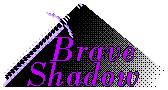
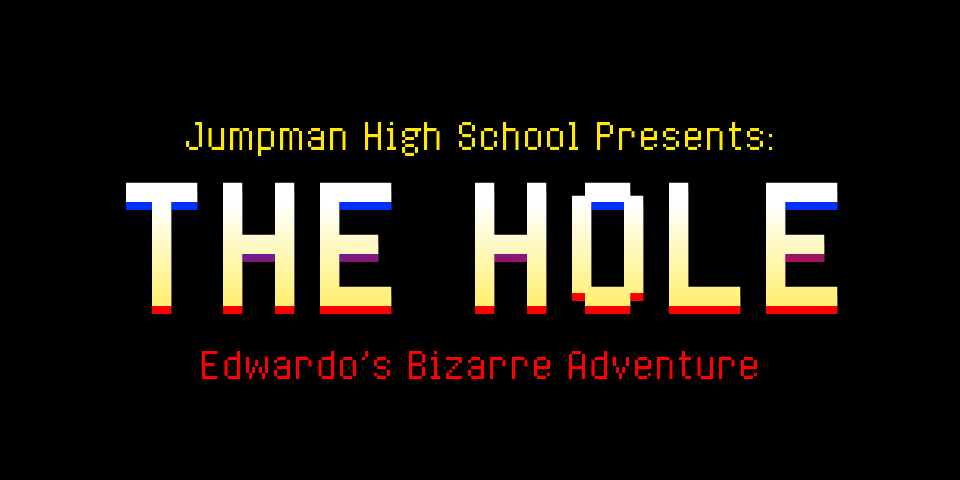
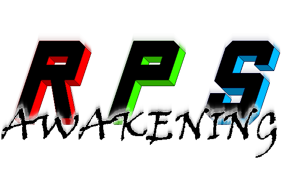

Daunte' Keevon Williamson
Game Designer, Musician, Developer
 @StandardEnemy
@StandardEnemyI'm an indie game developer looking to share my love for video games with the rest of the world!
View My Resume
Projects
Game Development
Through the will of a malevolent entity between space and time, the stars powering our ever expanding universe have been taken.
The last remaining Star Hunter awakens in a powerless Lunarian cruiser and treks into the void with one goal: find the missing stars.
This demo showcases an area accessible in the early stages of the full game: Helio Asteroid Cluster. One of the four fragments of the shattered Helio Star are believed to be housed within it's depths. The path to the Star Fragment will be perilous as creatures inhabiting these caverns will fight tooth and nail to defend their home.
Developed with Pixel Game Maker MV - a visual scripting engine with JavaScript compatability.
XIRIZ is currently in development.
Production began in February 2019.
XIRIZ Official Soundtrack
This passion project has allowed me to grow creatively in many ways. The sound of XIRIZ has evolved as development progressed, and I am truly excited to see how far this soundtrack can go as I improve as a musician.
Play the demo

A legend as old as time tells the story of a courageous Hero rising up to bring peace in times of chaos. Throughout history, the forces of dark would bring ruin to the lands of light, igniting the soul of the Hero to take up arms. And time and time again, the chosen Hero would triumph despite overwhelming darkness...
But as fate would have it, the forces of dark have gone silent for quite some time. The latest era of peace has yet to meet any opposition. Under an eternal sun, the lands faced ruthless droughts and scorching winds. The concept of shade soon faded into a distant memory. The balance is broken once again, but the Hero is nowhere to be seen.
One fateful day, deep in the Great Forrest, a young Shadow awakens under a grand oak tree. Being the last of their kind, the Brave Shadow must venture on a perilous quest to restore clarity to the blinded lands.
Brave Shadow is currently in development.
Developed with Pixel Game Maker MV - a visual scripting engine with JavaScript compatability.
Production began in November 2022.

Everyone says that Edwardo Jumpman is not worthy of his family name...
Today is the big day! The day of the ULTRA PRACTICAL EXAM! Edwardo will prove to everyone that he can be a good platformer... after all, he trained all weekend for this test!
This game was a submission to the 2020 So Bad It's Good game jam hosted on itch.io.
Developed with Pixel Game Maker MV - a visual scripting engine with JavaScript compatability.
Production began and concluded in June 2020.

Final submission for GAM100 4th solo coding assignment. A simple Rock, Paper, Scissors game with a "bluff" mechanic to simulate the mental warfare aspect of a real life RPS match.
Developed with C Processing - a C based game engine developed for internal / educational use at DigiPen Institute of Technology.
Simple html/js blackjack game developed in a couple hours spread out over 2 days. I wanted to use strictly core JS and html to allow for flexibility when experimenting with different front end libraries in the future.